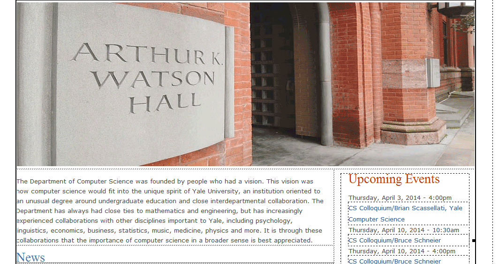
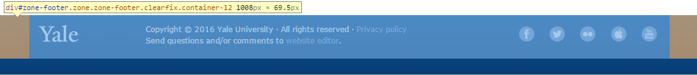

首页布局分析
首页
布局分析
页面横幅 |
|
| 导航栏 | |
页面正文（图、文、线条、链接等组成） |
|
页脚 |
顶部横幅制作
渐变蓝色顶边
<div class="top">
<div class="university">
<img src="images/search.png" align="right" />
</div>
<div class="cs">Computer Science</div>
</div>
- .top定义的div是一个全幅宽，96px高的、以渐变蓝色（线型图repeat-x）为背景的盒子；
- .university定义的是1008 × 34（px）、居中放置的、带背景图片(位置离左边15px)的盒子；
- .cs定义的是1008 × 62（px）、居中放置的盒子，并对横幅中"Computer Science"设置字体和位置。
导航栏制作
<div class="navbar">
<div class="nav">
项目列表制作的导航栏
</div>
</div>
- .navbar定义的div是一个全幅宽，29px高的、以渐变深灰色（线型图repeat-x）为背景的盒子
- .nav定义的div是1008 × 29（px）的自动置中的盒子
- 另外还需要设计样式.nav ul、.nav li a、.nav li a:hover
页面正文制作

页面制作
- 在div盒中直接放一表格（也可以直接居中的表格）；
<div class="content">
<table border="0" cellspacing="0">......
</table>
</div>
页脚部分制作

HTML代码
<div class="footer">
<div class="yale">
<table width="100%" border="0" cellspacing="0">
......
</table>
</div>
</div>
- .footer定义的div是一个全幅宽，95px高的、以渐变蓝色（线型图repeat-x）为背景的盒子；
- .yale定义的div是1008
× 70（px）的带背景图片的盒子，并设置页脚文字样式；
- 通过.yale a和.yale a:hlover设置页脚链接样式；
- copyright信息和左下角的图片链接由表格布局。 其中左边yale占138px，中间文字占558px，其余为右边的图标链接；
图标链接制作（略）
<div class="sharing">
<ul>
<li class="facebook first"><a href="https://www.facebook.com/YaleUniversity" title="Facebook">Facebook</a></li>
<li class="twitter"><a href="http://www.twitter.com/yale" title="Twitter">Twitter</a></li>
<li class="flickr"><a href="http://www.flickr.com/photos/yaleuniversity" title="Flickr">Flickr</a></li>
<li class="itunes"><a href="http://itunes.yale.edu/" title="iTunes">iTunes</a></li>
<li class="you_tube"><a href="http://www.youtube.com/yale" title="YouTube">YouTube</a></li>
</ul>
</div>
图片链接样式设计
.sharing ul {
width:200px;
float: left;
margin: 0;
padding: 0;
}.sharing ul li {
display: inline;
}.sharing ul li a {
text-indent: -9999em;
float: left;
display: block;
margin-left: 18px;
background: url(包含10个小图的png图片) no-repeat;
background-position: 0 0;
width: 24px;
height: 24px;
}.sharing ul li.first a { margin-left: 0; }
.sharing ul li.facebook a { background-position: 0 0; }
.sharing ul li.twitter a { background-position: -24px 0; }
.sharing ul li.flickr a { background-position: -48px 0; }
.sharing ul li.itunes a { background-position: -72px 0; }
.sharing ul li.you_tube a { background-position: -96px 0; }
.sharing ul li.facebook a:hover { background-position: 0 -24px; }
.sharing ul li.twitter a:hover { background-position: -24px -24px; }
.sharing ul li.flickr a:hover { background-position: -48px -24px; }
.sharing ul li.itunes a:hover { background-position: -72px -24px; }
.sharing ul li.you_tube a:hover { background-position: -96px -24px; }
格式规范与说明
- 网页横幅部分占满窗口宽度，而页面有效宽度为 1008px；
- 导航栏中的文字垂直居中，左边与“Computer Science”对齐；
- 导航栏上的各链接项设置一定间距，链接文字设置为14px，白色字体；
- 鼠标经过时，链接文字的背景色为灰色#666，背景灰色区域应包括间距，并同深色条同高；
- 当前页对应的链接文字（Home）应为浅蓝色，色值为#9cf；
- 页面正文自适应放置中心，大图与文字部分与横幅间留适当距离；
- 关于页面正文大图下面的部分，可直接利用上次作业内容；
- 页脚部分占满窗口宽度，自设适当的高度；
- 页脚部分的Copyright等文字尺寸统一为12px，链接文字为浅蓝色，色值为#6fb4ef，鼠标经过时颜色有变化，色值为#eeeeee；
- 概览页面应同被仿制网页在布局、内容、细节上大致相同。

延伸设计练习
仿制耶鲁大学计算机系的其他页面，如：http://cpsc.yale.edu/academics
| Last | Home | Next |
©2012-2018 Yang Peili. All rights reserved. contact me